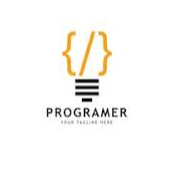

|  | Pavan Sendhil- Student at CMR National Public School - Grade 8 and 13 years old - Python Programming Language |
Hey! My name is Pavan and I am a self-taught programmer. I began Programming at the age of 12 as a hobby. Now, that is my main focus. I am currently learning advanced Python and JavaScript. My strong hand is Python and I am currently learning Web Development using Flask. For getting the best of flask, I also intent on learning CSS/HTML and JavaScript. I currently have no experience with any sort of project but will gladly work for any project within my level of expertise and experience.
Auro Mirra International School: Pre-Kg
Chika Muniyappa Reddy National Public School: Grade-1 to Grade-8
| Python | ★★★★ |
| HTML5,JS,CSS | ★★ |
| Java,CSS | ★ |